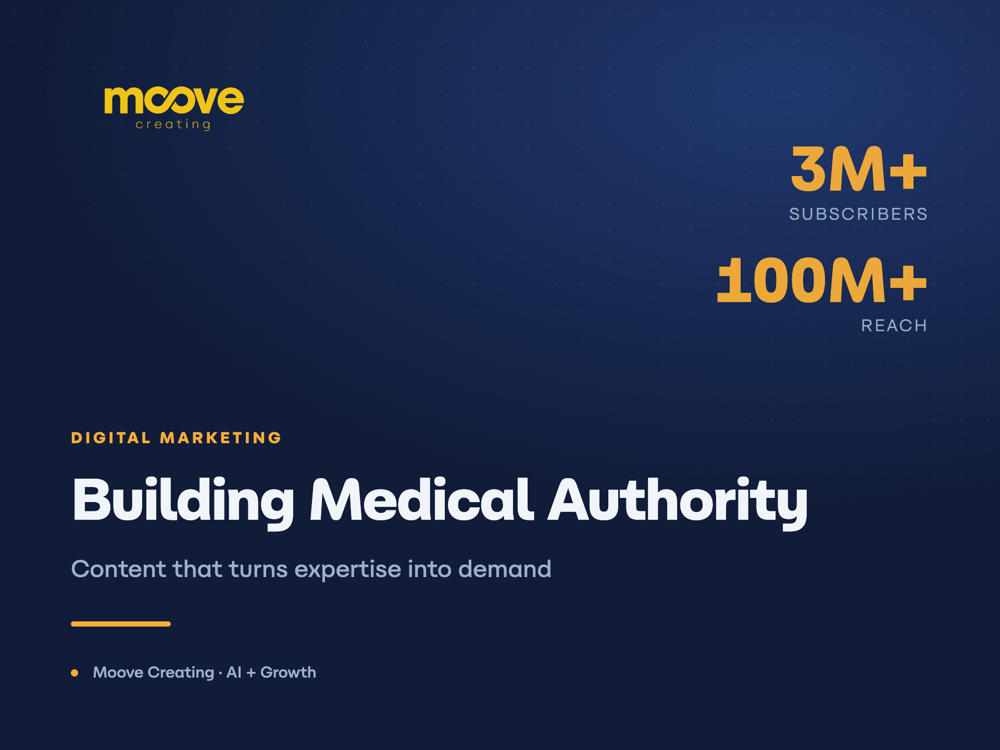

Building Medical Authority: 100M+ Reach for a Doctor Creator
A doctor with real expertise had no meaningful digital presence, and the obvious path to reach in health content is the one that costs a medical professional their credibility. The goal was scale without clickbait: a presence that turns expertise into trust, and trust into patient demand.

What we built
We built the content strategy and production across YouTube and Instagram around what people actually search for when they are worried about their health. Each piece was designed to answer a real question properly, in educational formats that reward depth instead of shock, so authority compounds with every video rather than spiking and fading. Production ran on a consistent cadence, with formats and topics adjusted continuously based on what retained attention and what converted into genuine interest.
The channel grew past 3M+ YouTube subscribers and 100M+ in total reach, turning medical content into durable authority and a consistent flow of inbound demand.